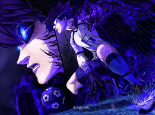
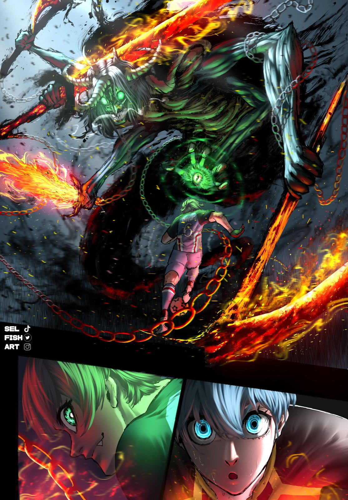
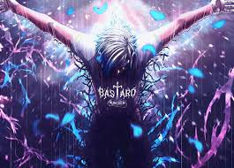

Tabito Karasu from Blue Lock is a highly intelligent, defensive-minded midfielder known for elite ball retention, spatial control, and assessing opponent weaknesses. Often considered one of the most balanced players in the Neo Egoist League (NEL), he excels at shielding the ball with his arms and creating opportunities, particularly from the midfield.


Charles Chevalier from Blue Lock is a 15-year-old prodigy midfielder for the PXG team, known for chaos, elite passing similar to Ness, and high dribbling. His stats reflect high-level technical skills, including "Great" speed, "S" rank offense, and accurate shots. He excels at physical maneuvering despite his age and thrives on creative, unpredictable gameplay.


Michael Kaiser from Blue Lock is a premier "New Gen 11" striker for Bastard München with a 98 overall rating, defined by elite shooting (98), offense (96), and speed (91). His signature weapon, Kaiser Impact, is a 40-second cooldown ability known for the world's fastest swing speed, often executed in the air for maximum impact.


Seishiro Nagi The Fallen Genius is a specialized Striker with a world class, genius level trapping and aerial control, designed to turn difficult passes into instant goals. His stats reflect elite close range technique, high acceleration, and explosive shooting ability. He excels when playing in the air or immediately after trapping the ball.


Shouei Barou The Predator is a premier striker, characterized by his high powered, accurate long range shooting, immense physical strength, and selfish villain playstyle. He excels at breaking defenses via dribbling charging and shooting from roughly 27 to 29 meters, often commanding an S rank in offense and shooting in the Neo Egoist League


Hyoma Chigiri The Red Panther is a premier speed based, that is 99 or higher , next with his high level dribbling from around 93 to 94, and refined shooting 91 or higher in the Neo Egoist League. He utilizes a 50 miles sprint which is around 5.77s to break defenses, specializing in cutting from the left to score from his golden formula zone.
"Luck descends equally upon only those who are truly prepared to fight." — Jinpachi Ego
"No matter how much you try to understand other people's hearts, people aren't able to change others. And that's why every time, you have to change yourself." — Isagi Yoichi
"My singular interest is in becoming the best in the world. There is a fundamentally different depth to our greed." — Sae Itoshi